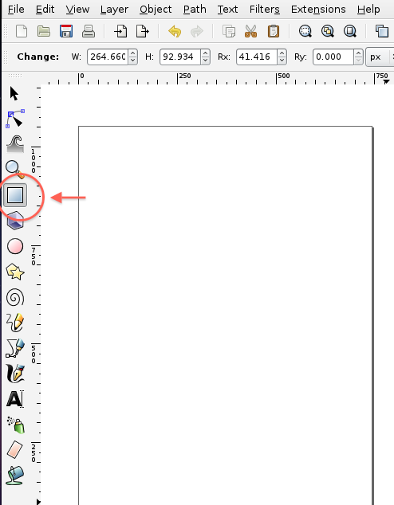
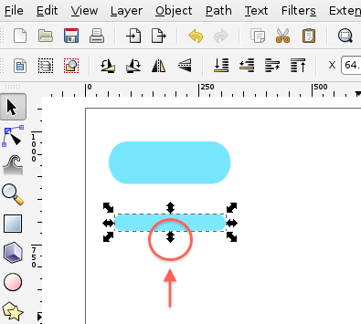
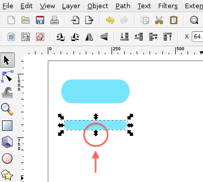
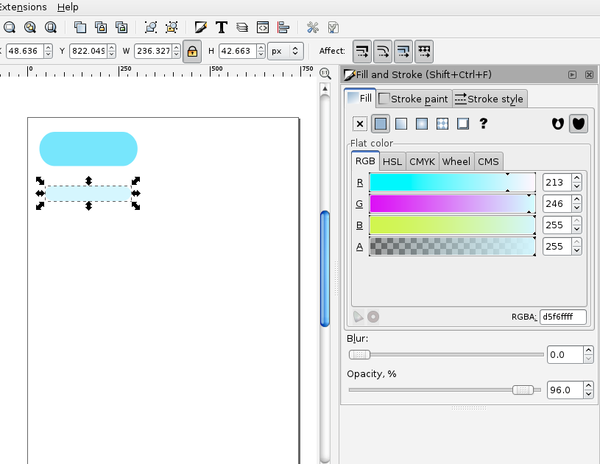
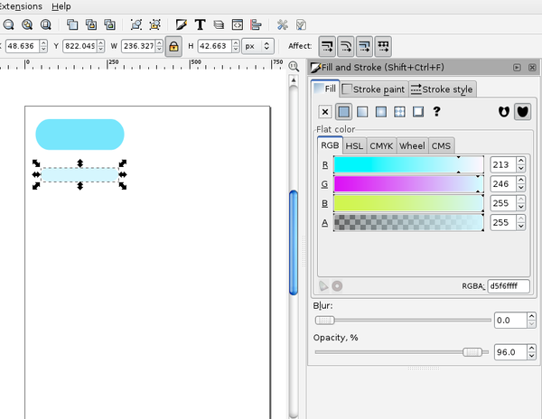
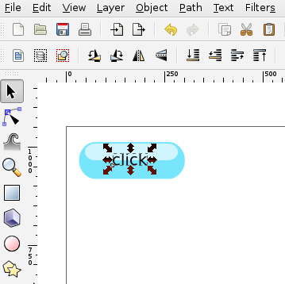
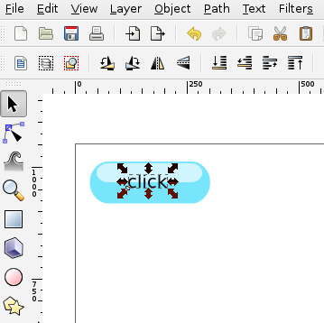
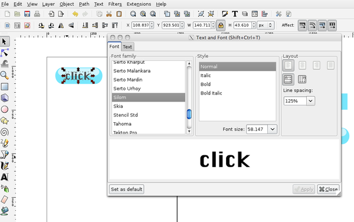

inkscapeとは?
inkscapeはScalable Vector Graphics (SVG) ファイル形式を使用したオープンソース・ベクターグラフィックエディターです。
簡単に言うと、無料で使用できるグラフィック作成ソフトです。
TODO: 簡単に言うと、ってその前の文章も簡単過ぎて言い換えになってない！
はじめに簡単なクリックボタンを作ってみましょう。
TODO: 文章は必ず<p>などのタグの中に入れて下さい。
TODO: 画像の幅は600px以内で。既存のものは全てリサイズしました。
簡単なボタン
まず、左のツールバーから□ツールを選択して長方形を描きます。

長方形を描き、□ツールのままにしておくと右上に○印が２つ表示されます。
その２つの○印の右側を下にドラッグすると長方形の角が丸くなります。

 次に左上の選択ツール（矢印ボタン）でオブジェクトを選択し、control＋Dで複製します
次に左上の選択ツール（矢印ボタン）でオブジェクトを選択し、control＋Dで複製します
※ここでおさえておきたいポイント→inkscapeのショートカットボタンはcommandではなくcontrolボタンを使用します
 コピーしたオブジェクトを選択し、下方向の矢印を上にドラッグして最初に作ったオブジェクトより細長いオブジェクトを作ります。

次に上部ツールバーから下図のボタンをクリックすると色の変更ができるウィンドウが表示されます。
コピーしたオブジェクトを選択し、下方向の矢印を上にドラッグして最初に作ったオブジェクトより細長いオブジェクトを作ります。

次に上部ツールバーから下図のボタンをクリックすると色の変更ができるウィンドウが表示されます。
 コピーしたオブジェクトを選択し、少し薄い水色に変更します。

色を薄くしたオブジェクトを最初のオブジェクトの上部に重ねて立体感を出します。
コピーしたオブジェクトを選択し、少し薄い水色に変更します。

色を薄くしたオブジェクトを最初のオブジェクトの上部に重ねて立体感を出します。
 これで立体感のあるボタンの形が出来上がりました
これで立体感のあるボタンの形が出来上がりました
 次に文字をいれます。文字は左のツールボックスの「A」と描いてあるボタン（下図参照）を選択します。
次に文字をいれます。文字は左のツールボックスの「A」と描いてあるボタン（下図参照）を選択します。
 先ほど作ったオブジェクトの上でクリックしてキーボードで「click」と入力

比率を変えずに大きさを変えたいので、上部ツールバーの鍵マークをクリックして比率を固定します。
先ほど作ったオブジェクトの上でクリックしてキーボードで「click」と入力

比率を変えずに大きさを変えたいので、上部ツールバーの鍵マークをクリックして比率を固定します。
 ボタンに合うよう、矢印を調節して文字を適当な大きさにします。
ボタンに合うよう、矢印を調節して文字を適当な大きさにします。
 最後に書体をかえます。上部ツールバーの右側にある「T」のボタンをクリックします。
最後に書体をかえます。上部ツールバーの右側にある「T」のボタンをクリックします。
 するとFontのウィンドウが表示されますので、そこで好みの書体を選択して決定して下さい。
するとFontのウィンドウが表示されますので、そこで好みの書体を選択して決定して下さい。
ここでは「silom」という書体を選択します。

立体感のあるクリックボタンの完成です。